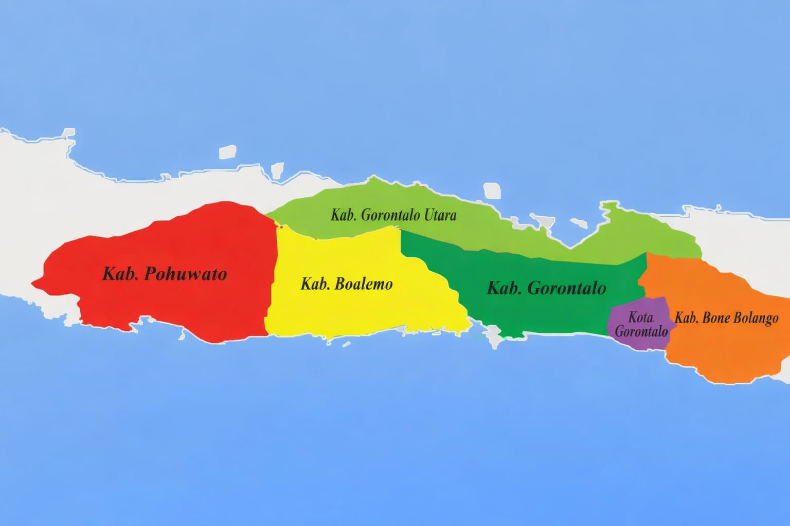

Geografis Wilayah Administratif
Terletak di Semenanjung Utara Pulau Sulawesi. Koordinat 0° 19' – 1° 15' LU.

Kota Gorontalo
Ibukota Provinsi. Pusat jasa, perdagangan, pendidikan, dan kawasan bersejarah.
Kab. Gorontalo
Ibukota Limboto. Lumbung pangan utama, Menara Keagungan, Bandara Djalaluddin.
Kab. Bone Bolango
Ibukota Suwawa. Taman Nasional Nani Wartabone, wisata Hiu Paus.
Kab. Boalemo
Ibukota Tilamuta. Pulo Cinta, industri pertanian jagung.
Kab. Pohuwato
Ibukota Marisa. Pertambangan emas, perkebunan sawit, Cagar Alam Panua.
Kab. Gorontalo Utara
Ibukota Kwandang. Gerbang laut utara, perikanan tangkap, Pulau Saronde.
Aksesibilitas Transportasi
Bandara Djalaluddin (GTO)
Jakarta CGK, Makassar UPG, Manado MDC.
Pelabuhan Gorontalo & Anggrek
PELNI Tilongkabila, Tol Laut peti kemas.